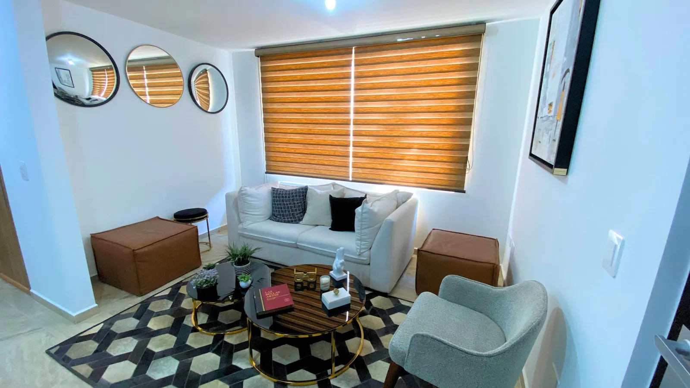
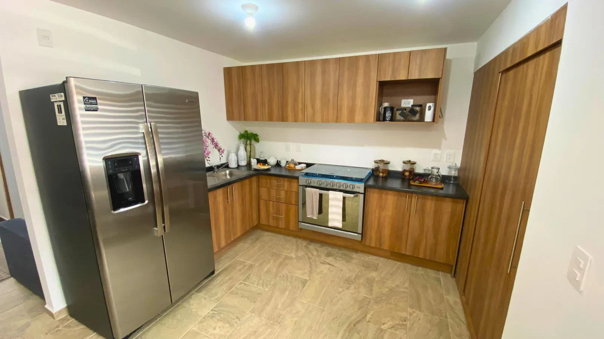
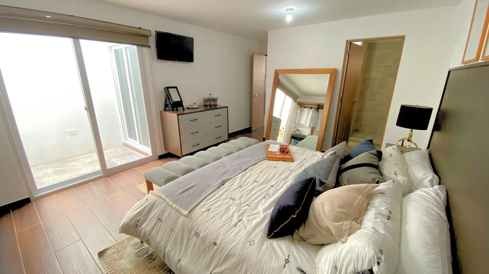
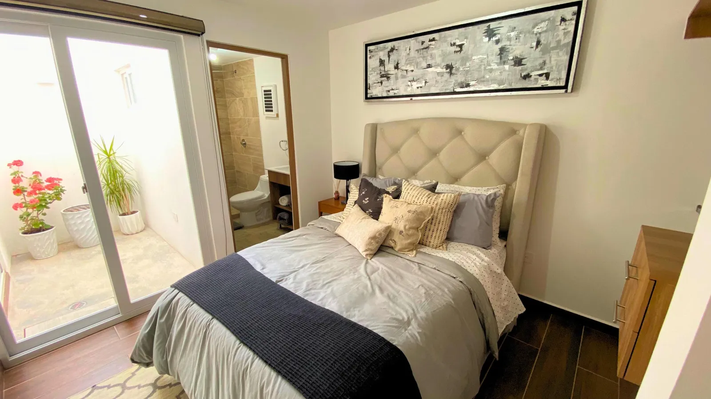

El Pueblito como elección de zona
Cornelia está en El Pueblito, Corregidora. Puede encajar si te interesa este entorno y tus actividades cotidianas quedan bien conectadas desde el desarrollo.
Departamento · Querétaro
$2,340,000 a $2,510,000 MXN
Precio actualizado · sujeto a disponibilidad y condiciones de la unidad.




Desliza para explorar las imágenes →
MÁS ALLÁ DE LOS METROS CUADRADOS
Puede encajar contigo si… Buscas un departamento de dos recámaras en El Pueblito y quieres comparar distribución y presupuesto con claridad.
Cornelia está en El Pueblito, Corregidora. Puede encajar si te interesa este entorno y tus actividades cotidianas quedan bien conectadas desde el desarrollo.
La sala de TV añade un espacio distinto al área principal. Recorre la unidad para evaluar si resuelve tu forma de descansar, recibir o trabajar en casa.
El rango de $2,340,000 a $2,510,000 permite comparar opciones del proyecto. Planta, orientación y distribución deben justificar la diferencia para ti.
Si la quieres para renta, comparemos rentas efectivas de unidades similares, mantenimiento y periodos sin inquilino antes de calcular un rendimiento.
UBICACIÓN Y ENTORNO
Búsqueda por nombre del desarrollo; confirma el acceso conmigo antes de tu visita.
Referencia de zona: sitio del desarrollador.Conoce la distribución y consulta las unidades, ubicación, superficies y precios disponibles.